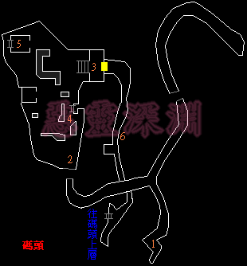
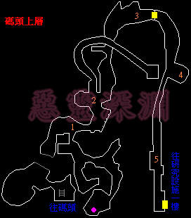
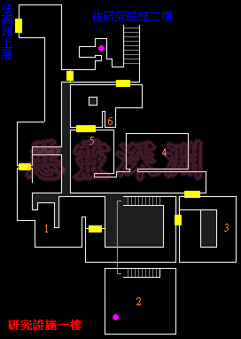
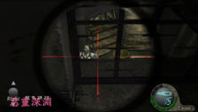
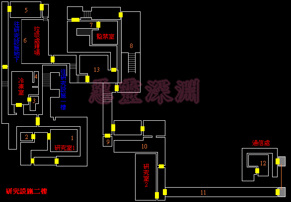

|
惡靈古堡～惡靈古堡４----地圖攻略～5-1
|
|
攻略內容以Normal為主，地圖上的紫色圓點●表示高價寶物的位置 ，標綠色的道具則是過關必須的重要道具。
 從地圖右上角開始了這個章節，在編號1的地方有些東西可拿，往編號2的方向走，跳上編號2的陸地時被敵人發現了，士兵會因此 朝Leon聚集過來，再往前一點的話會出現一個鏈砲兵，殺傷力很大，而且攻擊範圍很廣，要特別小心，若是不想引發士兵聚集過來 ，就在跳上編號2陸地之前先把前方的探照燈射破。調查編號3處打開紅色的射線，然後先去調整編號5上層的反射鏡，使紅色射線 射至編號4處的反射鏡，再去調整編號4上層的反射鏡，讓光線射回編號3處，如此一來門就打開了。
路經編號6時，必須按下複合按鍵躲避村民的大石塊攻擊（若沒有將碼頭的敵人全數打倒，這裡則不會有事件）。 往碼頭上層。
 一到碼頭上層就有個士兵在前方，玩家可以先發制人。到達編號1處時，可以右轉到洞窟裡，雖然有幾個士兵，但是也有個可以組 合的高價寶物金の聖猫像（金的聖貓像），只要爆破紅色油桶即可進入拿取。 編號2的地方有一批士兵，其中還有持火箭筒以及投擲炸藥的士兵，要優先解決。左側往上層的路是死路，但是有道具可拿。前進 到編號3時，可看到有一輛滿載油桶的推車，利用推車對付緊追的士兵。調查門旁的開關，開門後前進。 編號4有武器商人。 購物指南（new）：
這裡除了寶物地圖之外，還可以購買殺手7，殺手7和麥格農手槍相比，雖然最終的威力小很多，但是裝彈速度卻快很多， 玩家依需求選擇一把吧。 在編號5會出現一批士兵，注意右側牆上也有一個持十字弓的士兵。往研究設施一樓。

總算進入研究設施之中。經過編號1時小心冷凍櫃中竄出的着火士兵。編號2的房間可以自己選擇要不要下去，下去的話會遇到十字 弓士兵和裝甲士兵，如果彈藥或是恢復藥不足的話還是不要下去吧，若要下去，就先從窗口狙擊下方的裝甲士兵，下面可以拿到高 價寶物信義の光＿赤（信義之光＿紅）。
 到編號3時透過監控器得知Ashley被關在研究設施二樓的監禁室中，趕緊繼續前進。 編號4的小房間有武器商人在。 購物指南（new）：
強烈建議購買防彈衣，可以降低30%受到攻擊時損傷的程度，而且購買後Leon會直接穿在身上，不佔道具欄。 編號5的地方有個小機關，有個士兵位於編號6控制閘門的開關，只要玩家接近，門就會關上，在玩家遠離時，會打開門讓其他士兵 用十字弓和炸藥攻擊，炸藥的殺傷力很大，最好在門打開時狙擊炸藥解決他們，對槍技沒信心的玩家就利用地雷發射器或散彈槍， 只要打倒門後這一群士兵，門就會打開。 在往研究設施二樓前，樓梯旁小間中有高價寶物黄銅の懐中時計（黃銅的懷錶）。
 研究設施二樓範圍相當大，而且還會出現新敵人。到二樓後，先前往研究室1，門口的箭頭機關必須要調整使箭頭從左上指到右下 ，成功開啟門後拿取file Luis的Memo3，以及裡側的屍體上冷凍室的鑰匙。卡片一到手，原本躺在編號2手術台上的再生者就會起身 朝玩家而來，其名為再生者，也就是說若是攻擊他非寄生體所在的部位，他都可以再生，例如腳、手、頭等部位，雖然打腳、手部 位可以暫時阻止他的前進或攻擊，但要打倒他還是要攻擊他體內的寄生體，寄生體通常位在軀幹部，由於現階段沒有道具可以精確 找出寄生體位置，給予他較多的傷害也能夠打倒他。 用冷凍室的卡片打開冷凍室，在編號3處利用機器將冷凍室的卡片交換成垃圾處理廠的鑰匙。旁邊有個開關編號4底部櫃子裡可以拿 取用來對付再生者和鐵處女的利器──測溫狙擊鏡，但是由於櫃子結凍了，所以要拿的話就必須將冷凍裝置關閉，關閉後冷凍室中 有一隻再生者也會因此活動起來（對於第二輪遊戲，身上帶有測溫狙擊鏡的玩家，也會有一進門再生者就活動起來的情況），將測 溫狙擊鏡裝置在狙擊槍上，即可在再生者身上看到扭動不停的寄生體，這就是他的弱點，只要擊倒所有寄生體，再生者就會死亡。 若是不想打倒，等待一分鐘左右門就會開啟。小心外面走道上的再生者。 到編號6的操控室時，可以看到下面垃圾處理場上有幾個士兵，這裡可以進行一個小遊戲，操作面板利用吊重夾將士兵一個個夾起 丟到垃圾口去。不過最多只能操作三次，一旦失敗，就不能再操作了。 好不容易到監禁室門口，卻發現門被鎖住了，只好繼續往前走。在編號8的房間中要小心被士兵夾擊，最好迅速突破。編號9有個打 字機，因為待會必須打倒鐵處女，擔心的話就先存檔。 在編號10遇上鐵處女，鐵處女的打法和再生者相同，但是他體內的寄生體比再生者多得多了，而且一旦接近玩家，身上就會伸出無 數根長長的鐵枝，相當可怕，而且有時會有一個再生體藏身在背面，從正面無法看到，可以先攻擊他的腳部讓他撲倒，或是手榴彈 、散彈槍、火炎彈將最後一隻寄生體打倒，附近的紅色鋼桶射擊後會爆炸，可以利用。鐵處女倒下後拿取監禁部屋鑰匙。拿到鑰匙 就可以回頭去解救Ashley，如果想拿更多道具就繼續前進。研究室2中有些道具，編號11的橋上使用閃光彈打倒烏鴉，也有武器商人 。搭底部的升降梯到上層的通信處，會發生一段Leon利用通信器向外求助的動畫。 回到監禁室門口，利用監禁部屋鑰匙開門，與Ashley會合。 本章節結束。
疑難解答
信義の光＿赤（信義之光＿紅） 3500ptas 黄銅の懐中時計（黃銅的懷錶） 10000ptas 組合──金的聖貓像 ＋ 信義之光＿紅 ＝ 金の聖猫像＋α（金的聖貓像α） 20000ptas 金的聖貓像必需要組合上三種寶石才算完成，完成後的價格高達35000ptas！
機率較高），而對於寄生體位於體內的再生者和鐵處女閃光彈沒有殺傷力，不過在後面幾個章節遭遇大批敵 人時還是相當有用的武器，如果道具欄的空間還有剩，就不要輕易賣掉閃光彈。 未經許可禁止轉載連結 |
||||||||||||||||||||||||||||||||||||||||||||||||||||||||||||||||||
惡靈深淵Biohazard Abyss http://98.to/coolbio